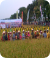
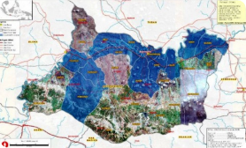

443 ASN Bojonegoro Terima SK Kenaikan Pangkat443 ASN Bojonegoro Terima SK Kenaikan Pangkat...
Kembangkan Potensi Perikanan, Bupati Anna Bersama Pokdakan Tabur Benih Ikan Di Bengawan SolotKembangkan potensi perikanan, Bupati Anna Bersama Pokdakan...
Tempat untuk menuju air terjun tersebut , Dari kota kearah selatan menuju kecamatan Gondang Setelah sampai di pertigaan arah nganjuk (belok kiri) segera ambil jalur lurus mengikuti jalan aspal. setelah menaiki pegunungan dan hutan, akan ada 2 jalan berca…..

kusnandaka.bjn@gmail.com
Untuk optimalisasi partisipasi berbagai elemen, berbagai kegiatan rutin dapat di festivalkan, festival ndadani dalan, festival dolanan, festival pasang closet, pagelaran sinder kolosal, jaranan kolosal, festival panen, festival resik-resik, dan kegiatan lainnya yang me....
ihza_2003@yahoo.com
Luar Biasa..!!. Satu Kata Untuk Juru Parkir di Kab. Bojonegoro.. Juru parkirnya sopan, berseragam, serius dalam membantu kita dalam memarkir kendaraan, bahkan membantu kita untuk menyeberang jalan... dan Hebatnya mereka tidak meminta bayaran.. bahkan sel....
djokobanjarjo@gmail.com
Pembangunan di pedesaan mohon dititik beratkan pada kesehatan, pendidikan dan mental spiritual
Streaming Malowopati FM
Peta Rawan Bencana

Badan Penanggulangan Bencana Daerah (BPBD) Kabupaten Bojonegoro, Jawa Timur, mencatat dari 28 kecamatan yang ada, 21 kecamatan rawan bencana, baik puting beliung maupun banjir.
Pariwisata Bojonegoro kini menjadi perhatian para wisatawan baik dari dalam kota maupun luar kota. Hal itu terbukti dari beberapa kendaraan dengan plat nomor luar kota mendatangi kawasan wisata Dander Bojonegoro. Hampir seluruh tempat wisata di kawasan ini di banjiri pengunjung saat long weekend
Bagi kamu yang ingin merencanakan liburan bersama keluarga pastinya harus memilih tempat liburan yang cocok untuk hal tersebut dong, nah bagi kamu yang belum memilih tempat liburan, coba deh sekali-kali berlibur ke tempat wisata yang terletak di Bojonegoro ini. Yaitu GoFun Bojonegoro Theme Park,